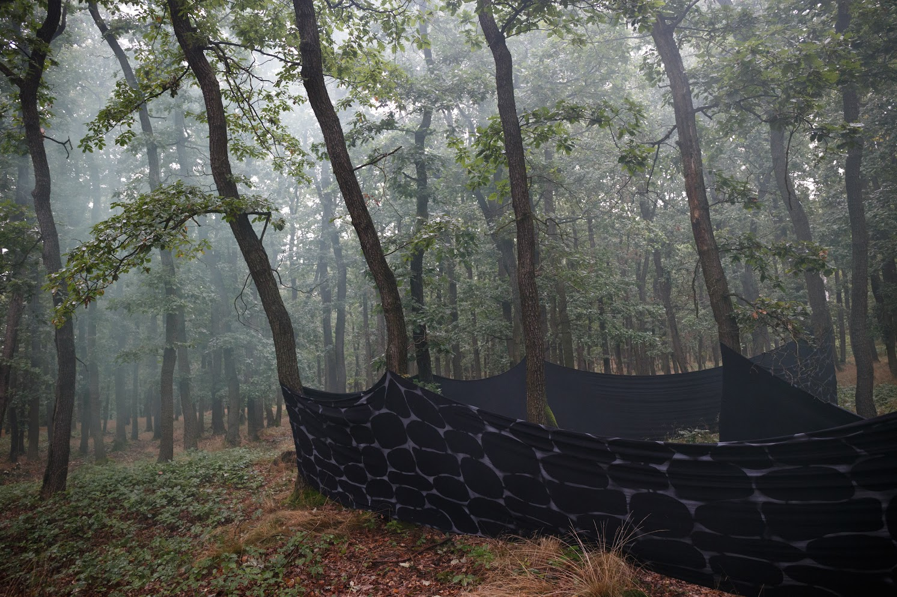

Příběhy Šalvánie

Domů
Pravidla
Postavy
Reálie světa
Proběhlé akce
Fotogalerie
Návody
Příští akce
fotogalerie
Pustina 8. 10. 2017 - fotky Taronor
Srdce lesa 2. 6. 2018 - fotky Tomáš Pulc
Pravda 6. 10. 2018 - fotky Tomáš Pulc
Slavnost Tvrz Dřevčice 30. 3. 2019 - fotky Tomáš Pulc
Světlo na konci tunelu 16. 11. 2019 - fotky Tomáš pulc
Lovecká výprava Prince Januše 30. 8. 2020 - fotky Tomáš pulc
❮
❯
detskylarpinfo@gmail.com